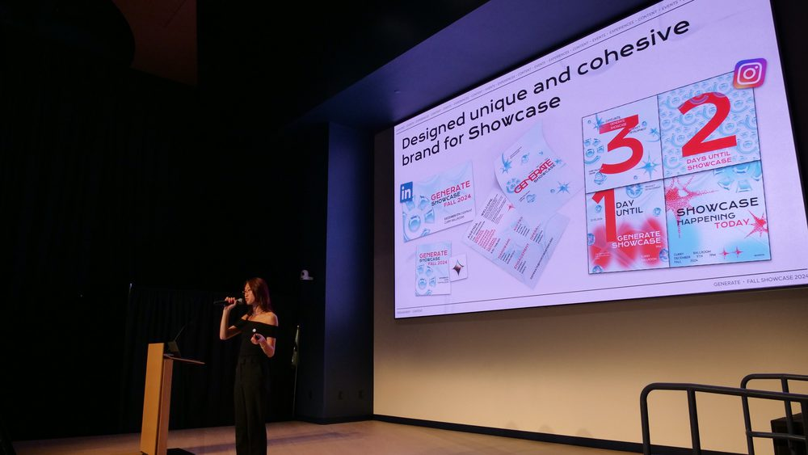
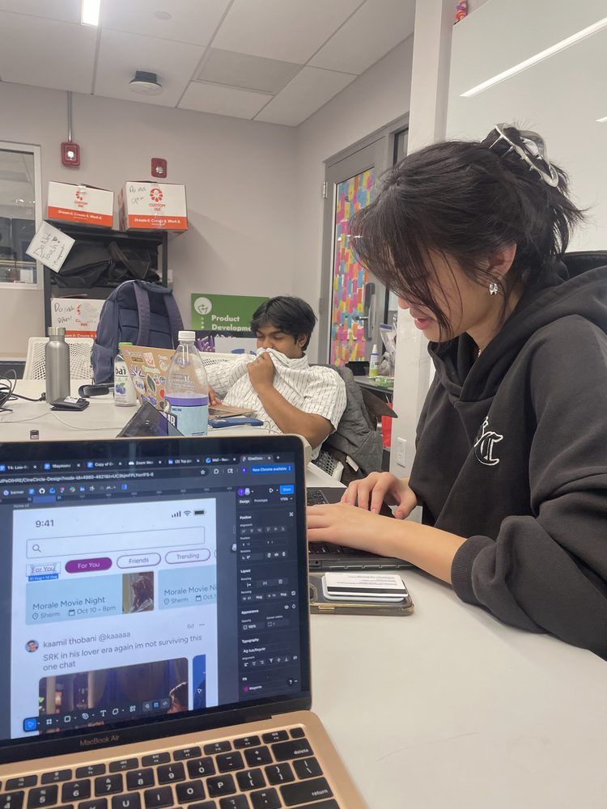
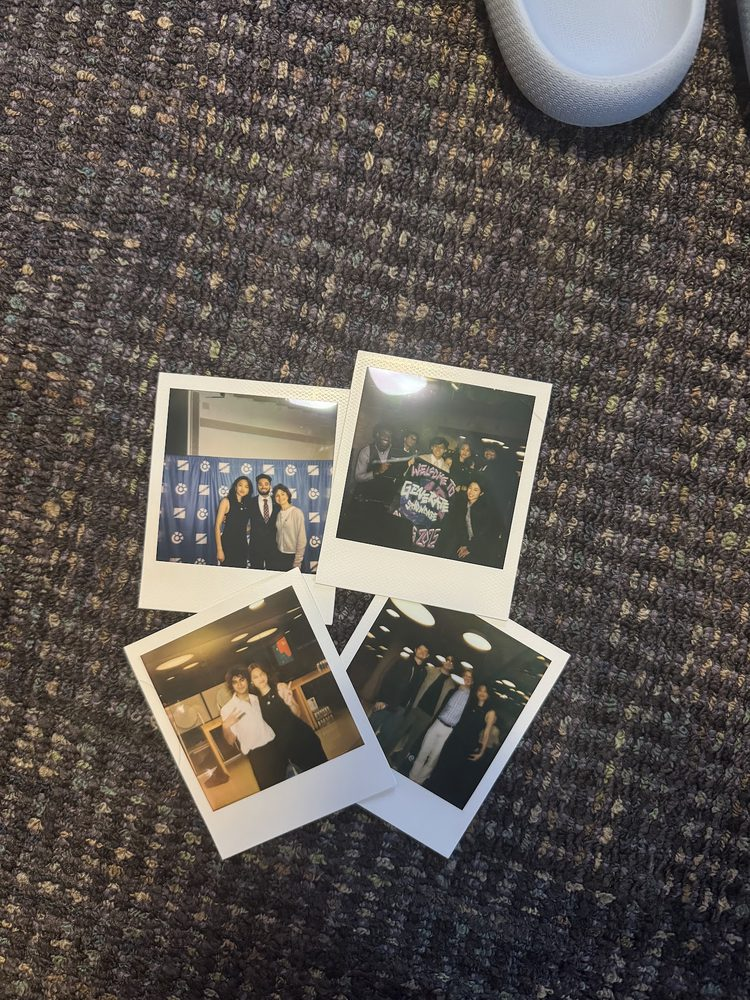
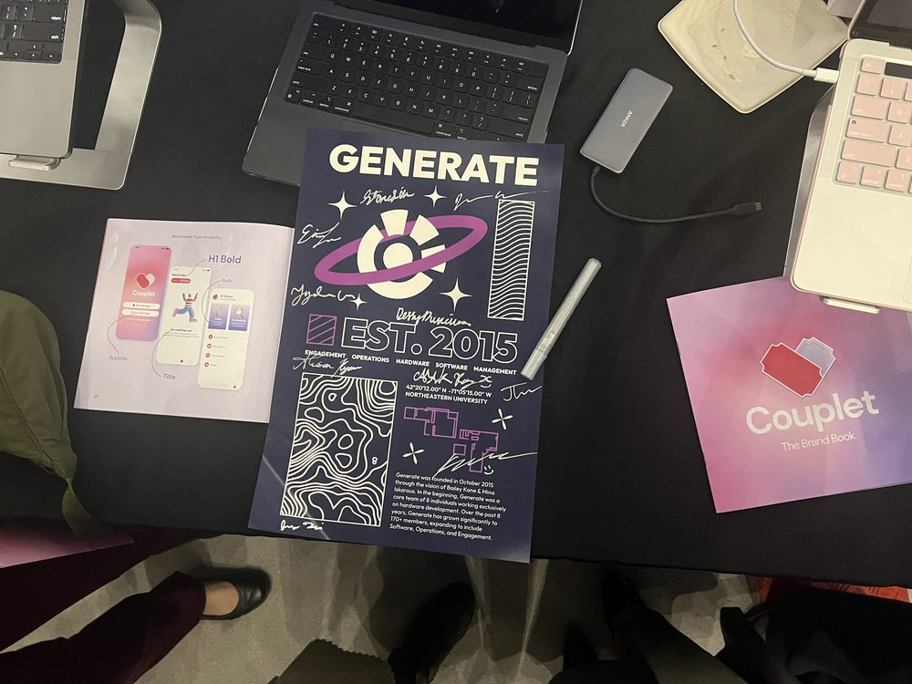
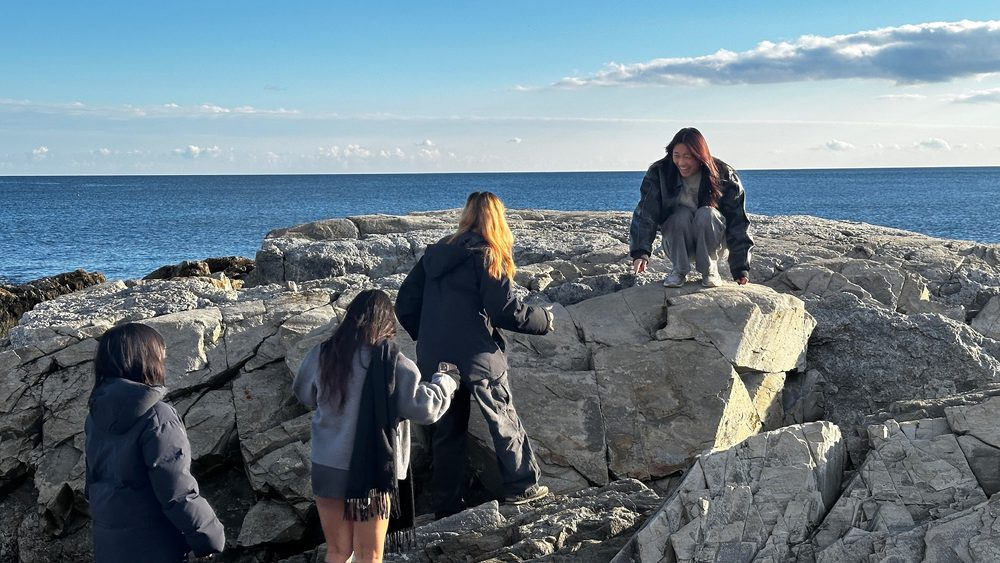
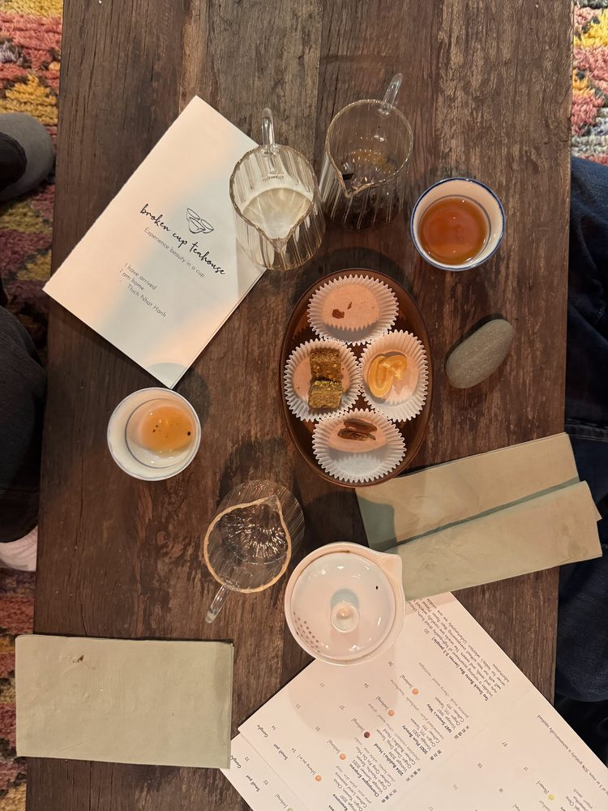
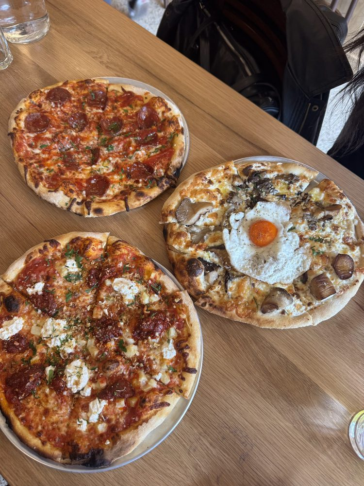
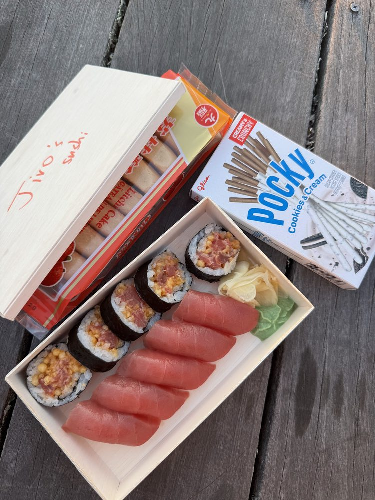
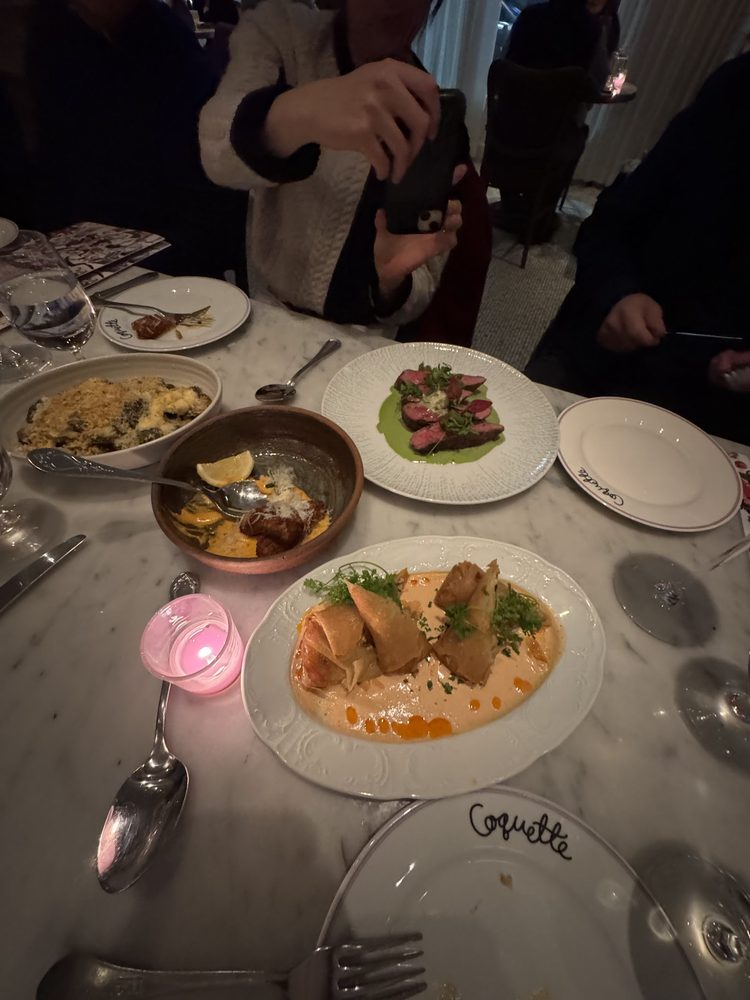
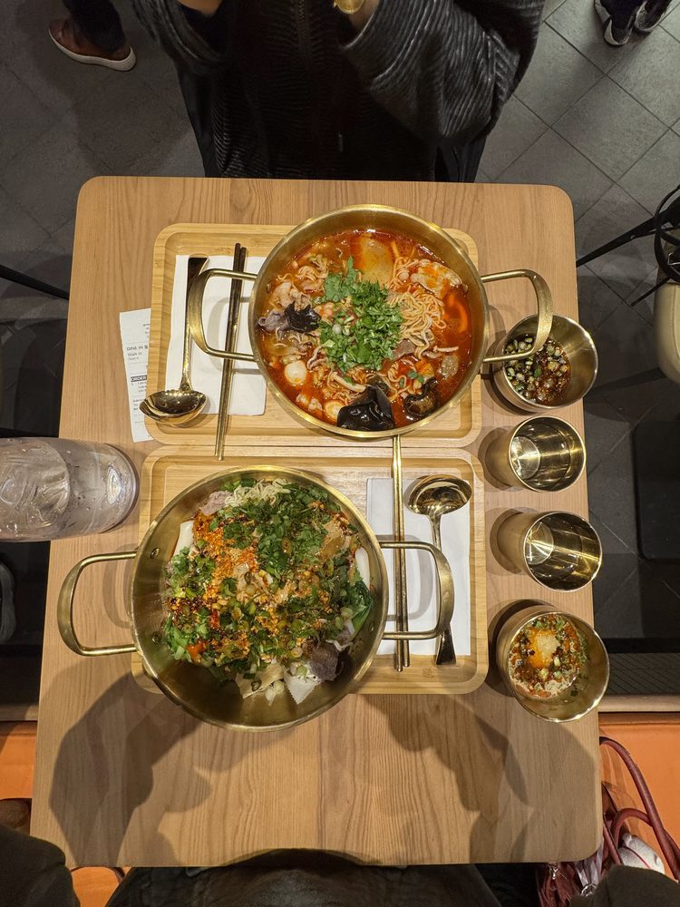

Experience
Associate Product DesignerSolace
July 2026 - Present
UX Research & Design Co-opBoston Consulting Group
July 2025 - Dec 2025
Design Co-opGoodwin Procter
July 2024 - Dec 2024
Product Design InternApprenta
May 2024 - July 2024
Snapshots of my life
GenerateCreating communities while designing





FoodAlways open to trying new places




